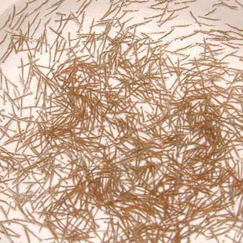
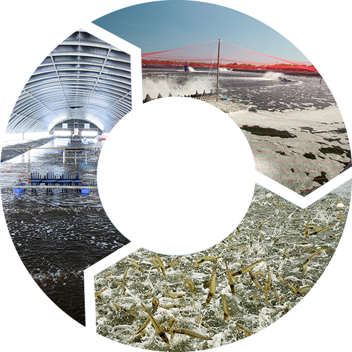

Nhằm góp phần nâng cao ý thức cho người nuôi tôm về vấn đề vệ sinh an toàn thực phẩm để cung cấp tôm sạch, an toàn cho thị trường, C.P. Việt Nam định hướng khách hàng nuôi tôm không kháng sinh, sử dụng các chế phẩm sinh học và sản phẩm an toàn trong quá trình nuôi. Trong đó, các sản phẩm của C.P. Việt Nam luôn được bà con nuôi tôm tin dùng và thực tế C.P. Việt Nam đã giúp bà con ứng dụng nhiều mô hình nuôi tôm thành công.
Công nghệ chăn nuôi
C.P. Việt Nam đã triển khai mô hình CPF-Combine Program bao gồm: CPF-Green House, CPF-Turbo Program và chương trình 3C và 3S.
Chương trình 3c

1
CPF-Green House
là mô hình nuôi tôm trong nhà ương (25 - 30 ngày), sau đó tôm được đưa ra các ao nuôi thương phẩm nhằm mục đích hạn chế được các dịch bệnh nêu trên, tăng sức đề kháng cho tôm, giảm chi phí, tăng vụ nuôi
2
CPF-Turbo Program
là hệ thống ao nuôi an toàn sinh học có đầy đủ lưới lan, ao có lót bạt, có hố xi phông… và quản lý môi trường ao nuôi bằng chế phẩm sinh học nhằm đạt mục tiêu 3 cao, 1 thấp và không thất bại
3
3C
tốc độ tăng trưởng cao, tỷ lệ sống cao và số vụ nuôi cao; 1 thấp là FCR thấp và không thiệt hại
Chương trình 3S
Các loại tôm
Một số loại tôm được nuôi nhiều tại Việt Nam